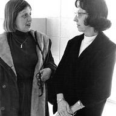

Young's Interviews Analyzed

← Marguerite Young, Our Darling · The Marguerite Young Society
Young talked about her work at length in interviews, and the study books lean on them often: the Dalkey Archive interview with Miriam Fuchs and Ellen G. Friedman, the Roy Newquist interview and the Charles Ruas interview among them. This section gathers close readings of what she said about her method, her novel and her life.
Two interviews with Young appear in Marguerite Young, Our Darling.
Where it comes up in the study books
Study materials
- Marguerite Young, Our Darling, Part 7: the 1988 interview with Ellen G. Friedman and Miriam Fuchs and a brief conversation with Fuchs, read closely
Interviews and talks
- The Studs Terkel Interview, 1965 (two-part radio program)
- The Duncan MacDonald Interview, "Observation Point," September 1965
- A Talk on "Angel in the Forest" (the mid-1960s reissue)
- "The Art of Fiction No. 66," Paris Review, Fall 1977 (interviewer Charles Ruas)
- The Ruas and Schwartz Interview on "Angel in the Forest," WBAI (undated)
- The Ruas Interview on Her Life and Miss MacIntosh, WBAI (undated)
- The American Audio Prose Library Interview, New York, May 1983
- The Complete Charles Ruas Interview, "Conversations with American Writers" (1985)
- "A Conversation with Marguerite Young," by Ellen G. Friedman and Miriam Fuchs (Review of Contemporary Fiction)
- The WNYC Interview (undated, the out-of-print years)
Essays, profiles and records
- "Liquescence as Form," a feminist-critical essay by Miriam Fuchs
- "Exorbitance and Death," a critical essay by Steven Shaviro
- "The Guru," a chapter by David O. Dowling on her Iowa years
- "Where the Landscape Moved Like Waves," a late-life profile by Susan Neville
- "Remembering Marguerite Young," a memoir by Steven Moore (Dalkey Days)
- Martha J. Sattler's Chronology (Marguerite Young, Our Darling)
Literary Influences Marguerite Young Named in Her Interviews
Interviews used
- Ruas: Charles Ruas, WBAI
- Ruas, New Harmony: Charles Ruas and Joan Schwartz, WBAI, on Angel in the Forest
- Angel talk: Young’s talk on the reissue of Angel in the Forest
- Terkel: the “ST with MY” interview
- MacDonald: Duncan MacDonald, Observation Point, 1965
- WNYC: WNYC interview, part 1
- Callison 1 and 2: Kay Callison, American Audio Prose Library, 1983
- Friedman and Fuchs: Review of Contemporary Fiction
- Paris Review: The Art of Fiction, 1977
The Influences She Returned to Most
William James. This is the influence she named most often. She studied his psychology “as if it were a Bible” and taught it to her students. She took from him the stream of consciousness, the many selves under one roof, false memory, and “the person you did not become.” She also credits him with her pluralism, seeing the many rather than the one, and with the idea that a person is body, soul, and clothing. (Ruas, Callison 1, Callison 2, Terkel, MacDonald, Friedman and Fuchs)
Saint Augustine. She named The City of God and the Confessions again and again, saying she learned a great deal from their imagery and from his obsession with dreams. When asked about Joyce, she answered that she was influenced by Augustine instead. (Callison 1, Callison 2, Terkel, Friedman and Fuchs)
Herman Melville. She called Moby-Dick her favorite American novel and Melville “my great love,” and said she was “insane about Melville.” She saw in Moby-Dick the same pull between Scottish Calvinism and the longing for Catholicism that she found in her own work. She also liked that she lived near his birthplace. (Terkel, Callison 2, WNYC)
Charles Dickens. She read him by age ten or eleven, introduced by her grandmother. From Dickens she took the rule that every minor character must be fully alive, and the habit of showing a character’s inner life through the outside: body and clothing. She learned shorthand as a teenager because Dickens had. (Ruas, Callison 1, MacDonald, Terkel, Friedman and Fuchs, Paris Review)
Nikolai Gogol. She said she was “deeply under the spell” of Dead Souls, both for its attention to minor characters and for its form as a novel of the road, meeting people who are never seen again. (Ruas, Callison 1, Friedman and Fuchs)
Laurence Sterne. She named Tristram Shandy as a book that directly influenced her, called Sterne a writer she felt close to, and pointed to him when explaining her long sentences. (Ruas, Callison 1, Terkel, Friedman and Fuchs)
Cervantes. She called Don Quixote “the greatest of all novels” and placed Miss MacIntosh, My Darling in the tradition of the picaresque psychological novel. She noted that she mentions Don Quixote on the novel’s first page as a key to the journey ahead. (Callison 1, Terkel, Friedman and Fuchs)
Robert Browning. She studied all of Browning, including The Ring and the Book, at about eighteen with an older teacher, Catharine Merrill, in Indianapolis. Her belief that a writer should base characters on real events came from Browning’s idea that the poet is a reporter. (Ruas, Callison 1)
Thomas Carlyle. She said she took Carlyle as her master when she moved from poetry to prose. She also named Sartor Resartus among the books that shaped her and made a point of visiting his house in London. (Angel talk, Callison 1, Callison 2)
Samuel Taylor Coleridge. She called the albatross and guilt of The Rime of the Ancient Mariner “the secret heart” of her novel, and said the opium lady faces Coleridge’s final choice. Coleridge’s debate with Robert Owen was part of what drew her to the subject of Angel in the Forest. She even wrote to President Kennedy about nuclear testing using only the imagery of the Ancient Mariner. (Terkel, Angel talk, Ruas, New Harmony, Callison 1)
The Bible. Her grandmother had her read the Bible for its literary style as training for a writer, and Young said she still thought it the best training there is. She also named the Lives of the Saints and urged her students to read them. (WNYC, Terkel, Callison 1, Friedman and Fuchs)
Plutarch’s Lives. She called this “one of the most important books” for her. (Callison 1)
Reading That Shaped Particular Books and Ideas
John Milton. Paradise Lost and the Fall of Man was her major subject at the University of Chicago. She said Milton’s blindness was one reason she became fascinated by people missing a sense, like the stone-deaf man and the blind pianist in her novel. (Callison 1, Terkel)
John Lyly’s Euphues, Heraclitus, and the bestiaries. Her master’s thesis was on the birds and beasts in Lyly’s Euphues, and she said she studied animal symbolism “from Heraclitus onward.” She loved the old bestiaries because animals work as icons for saying things about people. (Ruas, Callison 1, Paris Review)
Fyodor Dostoevsky. She took one idea from him as a key from the very beginning of Miss MacIntosh: that sleepers divided by day all dream the same dreams at night, so our dreams bind us, not our reasons. (Terkel)
Walt Whitman. She described Miss MacIntosh, My Darling as “a sad Walt Whitman,” built on his theme of the one and the many. (Terkel, Callison 1)
Carl Jung. She said she read Jung “to give me courage along the way” and would call her novel Jungian rather than Joycean or Faulknerian. (Terkel)
Daniel Defoe. She thought of Miss MacIntosh as a kind of Robinson Crusoe with her umbrella, a Calvinist figure set down in a Miltonic or Dantean paradise. (Terkel)
Elizabeth Barrett Browning and Thomas De Quincey. She had already read Barrett Browning and De Quincey’s Confessions of an English Opium-Eater before meeting the real opium lady, and both shaped how she understood her. (Ruas, MacDonald, Callison 1)
Ralph Waldo Emerson and the Transcendentalists. She set the opium lady’s house near Boston because it was the home of “my beloved Emerson.” She also named Blake, Swedenborg, and Transcendentalism as the kind of philosophy American writing grows from. (MacDonald, Callison 2)
Edgar Lee Masters and Thomas Gray. While writing Angel in the Forest she thought a great deal about Spoon River Anthology and Gray’s “Elegy Written in a Country Churchyard.” She had not yet read Sherwood Anderson. (Ruas, New Harmony)
Joseph Smith and the Mormons. She said she was more influenced by the poetry of the Mormons than by T. S. Eliot, and that she loved Joseph Smith as the more poetic partner to Brigham Young. (Friedman and Fuchs, Ruas)
Charles Darwin, Audubon, and Rachel Carson. The opium lady, Minna Weissenbach, urged her to read Darwin’s Voyage of the Beagle, and Young kept notebooks of her nature reading. She also named Audubon and Rachel Carson. (WNYC, Ruas)
The epic tradition. At Chicago she studied the same sources Eliot drew on, including Dante, Milton, Lucretius, Locke, Fourier, Darwin, and Owen. (Friedman and Fuchs)
Teachers and Early Guides
Her grandmother. Young called her grandmother the great influence of her life and felt her presence while writing. Leon Edel told her Miss MacIntosh was “a grandmother’s book.” Her grandmother introduced her to Anatole France, Dickens, George Eliot’s Adam Bede, Victor Hugo, Blake, and Thomas Moore, and read metaphor as plain truth. (MacDonald, Ruas, Callison 1, Paris Review)
Anatole France. Through her grandmother he became the writer she loved most as a girl, and she read all of him in French. (Ruas, Paris Review)
Robert Morss Lovett and Ronald S. Crane. She named these University of Chicago professors as direct influences. Lovett taught her epic literature. In Crane’s class she read Tom Jones thirteen times to study its structure, which she called the most valuable training for her own writing. (Friedman and Fuchs)
Stith Thompson. She admired the ballad scholar and dreamed of collecting Scottish ballads in the Tennessee mountains. (Ruas, New Harmony)
Writers She Loved Without Imitating
She named these as writers she loved or admired while making clear their style was not hers:
- Mark Twain, for his dark cosmic spirit (Ruas)
- Theodore Dreiser and Sinclair Lewis, as great dreamers from the Midwest. Lewis once told her she had shown “another America.” (Ruas, Friedman and Fuchs)
- Edgar Allan Poe, whom she said she could almost see at Sheridan Square on rainy nights (Callison 2, Friedman and Fuchs)
- Dylan Thomas, whom she felt closer to than Henry James (Callison 2, Friedman and Fuchs)
- Henry James, who visited her in dreams while she wrote Miss MacIntosh, though she did not consider her writing Jamesian (Callison 1, Callison 2)
- Elinor Wylie, whom she preferred to Edna St. Vincent Millay (WNYC)
- Victor Hugo, W. H. Auden, William Carlos Williams, Wallace Stevens, James Merrill, Ambrose Bierce, and Vachel Lindsay (Friedman and Fuchs)
- Women writers she considered great: Kay Boyle, Christina Stead, Katherine Anne Porter, Katherine Mansfield, Anna Kavan, and Jane Bowles (Friedman and Fuchs)
- Later writers: Flannery O’Connor, Toni Morrison, and Cynthia Ozick, whom she thought was also influenced by William James (Callison 2, Friedman and Fuchs)
Influences From Outside Literature
Charlie Chaplin. She said Chaplin “influenced every book I’ve ever written,” through his mimicry. (Callison 2)
W. C. Fields, Marc Chagall, and Ethel Barrymore. She based the passive policeman on Fields, said Chagall influenced Esther Longtree, and said Barrymore shaped the way Miss MacIntosh walked. (Callison 2)
Writers She Said Did Not Influence Her
Gertrude Stein. She knew and liked Stein but felt no kinship with her as a writer. (Ruas, Friedman and Fuchs)
T. S. Eliot. She admired Eliot but resented readers who heard echoes of him, saying she went to his sources rather than to him. (Friedman and Fuchs, MacDonald)
James Joyce. She loved his work but told Friedman and Fuchs he did not influence her. In the 1983 Callison interview, however, she said she related herself more closely to Sterne and Joyce than to Henry James. (Friedman and Fuchs, Callison 1)
Virginia Woolf. She rejected the comparison, though she based Miss MacIntosh’s walk into the sea partly on Woolf’s death. (MacDonald, Ruas)
Willa Cather. She said she liked Cather but did not love her. (Ruas)
Chaucer. She said Chaucer could not have been further from her mind when she wrote of the old woman turned young. (Callison 1)
Thomas Wolfe, Faulkner, and Proust. When others compared her to them, she redirected the comparison to Jung. (Terkel)